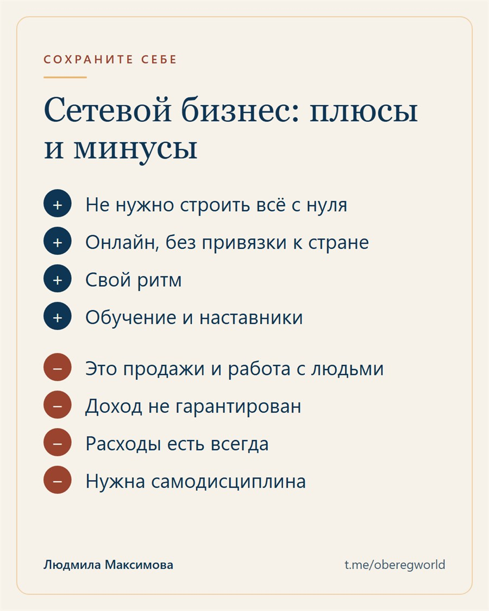

Взвешиваю сама
Сетевой бизнес глазами предпринимателя: честные плюсы и минусы
Слова «сетевой бизнес» у многих вызывают вежливую паузу. Я её понимаю: двадцать лет у меня своё агентство недвижимости в Турции, и на сетевой бизнес я тоже смотрела с вопросами. Сейчас я строю в нём второе направление и вижу его изнутри. Поэтому вот мой список: что здесь удобно, что трудно и о чём подумать до старта.

Коротко
Сетевой бизнес не волшебная кнопка. Пирамиду от законного дела отличает то, откуда берутся деньги. Плюсы сетевого бизнеса: не нужно строить всё с нуля, можно работать онлайн без привязки к одной стране, есть обучение и наставники. Минусы: это продажи и работа с людьми, доход не гарантирован, расходы всё равно есть, а самодисциплину никто не выстроит за вас. Решать стоит после ответов на пять вопросов в конце статьи.
Что такое сетевой бизнес простыми словами
Сетевой бизнес, он же многоуровневый маркетинг (MLM), устроен так. Компания продаёт товар через независимых партнёров. Партнёр получает вознаграждение со своих продаж и может приглашать новых людей: обучать их и получать вознаграждение с продаж своей команды.
Главная граница проходит по деньгам. В законной компании вознаграждение складывается из продаж товара людям, которые им пользуются. Если деньги в основном идут от взносов новичков, а товар нужен для вида, это уже пирамида. Как это проверить, я подробно разобрала в статье «Сетевой бизнес или пирамида: как проверить, прежде чем верить».
Плюсы, которые я вижу как предприниматель
- Не нужно строить всё с нуля. Производство, склад, доставка и документы есть у компании. Мне не нужно открывать офис, нанимать сотрудников и вести бухгалтерию склада. После двадцати лет своего агентства я хорошо знаю, сколько сил уходит на эту невидимую часть дела.
- Онлайн и без привязки к одной стране. Встречи, презентации и обучение проходят в Zoom, а партнёры живут в разных странах. Для меня это было важным условием. Правила своей страны при этом стоит уточнить заранее.
- Свой ритм. Я сама решаю, когда работать, и совмещаю новое направление с основным делом.
- Обучение и наставники. У нового направления новые правила, и мне важно, что есть у кого учиться. Я учусь у наставников и езжу на семинары.
- Пригодится ваш опыт. Навыки переговоров и умение считать риски, наработанные в своём деле, здесь работают напрямую.
- Товар, которым пользуешься сам. Рассказывать проще о том, что стоит у тебя дома. У меня это приборы для дома и здорового образа жизни.
Минусы, о которых говорят реже
- Это продажи и работа с людьми. Как бы красиво ни называлось дело, в основе лежат разговоры, встречи и предложения. Американский регулятор FTC советует до старта спросить себя: хочу ли я продавать и готов ли предлагать это знакомым.
- Доход не гарантирован. По данным FTC, большинство людей, которые приходят даже в законные MLM-компании, получают мало денег или не получают ничего, а часть уходит в минус. Я говорю об этом прямо: гарантий нет ни у кого.
- Расходы есть всегда. FTC перечисляет, на что уходят деньги: товар, обучение, поездки, сайт, рекламные материалы, встречи. Посчитайте их заранее, сразу за год.
- Нужна самодисциплина. Нет начальника и нет графика сверху, поэтому выстраивать его приходится самой. Мне это тоже даётся не сразу: планёрки, звонки и встречи, и всё это рядом с агентством. Не всё получается с первого раза, и я этого не скрываю.
- Репутация отрасли. Слово «сетевой» многих настораживает, и это понятно: рядом с законными компаниями годами работали пирамиды. Будьте готовы спокойно объяснять, чем вы заняты, и показывать документы.
- Нужно время. Команда и постоянные покупатели не появляются за месяц. Если результат нужен срочно, это плохая отправная точка.

5 вопросов себе до старта
Эти вопросы выросли из советов FTC и из моего собственного выбора.
- Хотите ли вы продавать и знакомить людей с продуктом? Если от одной мысли о таком разговоре со знакомыми становится неуютно, лучше узнать это сейчас.
- Кто будет пользоваться товаром, кроме вас? Хорошо, когда у продукции есть покупатели, которые не собираются строить бизнес.
- Сколько это стоит на старте и потом? Обязательные покупки, обучение, поездки. И что будет, если от необязательного отказаться.
- Сколько часов в неделю вы готовы отдавать? С учётом основного дела и семьи.
- С кем вы будете работать? Поговорите с теми, кто уже в деле, и с теми, кто ушёл. Спросите, как у них на самом деле.
Минусы, названные до старта, обходятся дешевле найденных после.
Почему я всё-таки выбрала этот путь
Партнёрский бизнес в wellness появился у меня рядом с агентством, и агентство никуда не делось. Перевесили три вещи: дело не держит меня в одной стране, в нём пригодился мой опыт, и здесь есть у кого учиться. Как я выбирала, я рассказала в статье «Второе дело рядом со своим».
Минусы я тоже вижу. Поэтому говорю всё сразу:
- вход через покупку приборов компании, сумму я называю до любого решения;
- приборы, купленные на входе, остаются у вас: ими пользуются сами, дома;
- обязательных ежемесячных покупок нет;
- доход не гарантирован;
- название компании, её сайт и документы вы получите до любого решения.
Хотите спросить про минусы лично?
Напишите мне в Telegram или WhatsApp. Спрашивайте прямо, в том числе о неудобном: я отвечу сама. Если захотите, приглашу на онлайн-встречу на 30–40 минут, а решать будете вы. А если пока хочется просто присмотреться, загляните в мой Telegram-канал.
Источники
- Федеральная торговая комиссия США (FTC). Multi-Level Marketing Businesses and Pyramid Schemes. Июль 2022.